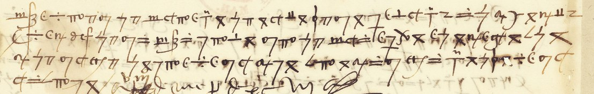

At a glanceKnown key applied · partial: all lines but ten code groups, five burn holes and one word
- The letter
- An unaddressed Spanish cipher letter from Italy, dated 8 January 1497, three days before Federico of Naples’s letter in the same volume. It is wholly in cipher except the date line and signature on the verso.
- Where
- Bibliothèque nationale de France, Espagnol 318 no. 95, f. 122r–v (Gallica, canvases 458–459). Part of catalogue item 9.
- The cipher
- A homophonic alphabet of invented signs, one to three per letter, with code groups written in clear letters (
bac,bnh,bon,def…). - How it was deciphered
- George Lasry reconstructed the alphabet in 2022 and deciphered lines 1–13; Tomokiyo published both as images. Michael Brackx deciphered lines 14–33 and the verso with that alphabet in October 2026. Seven passages were checked here against the scan.
- What it says
- The French court the Señoría with grain and trade licences; a cardinal is to go to France to seek peace; the writer asks for a force to defend “this”, for if it were lost “no auia cosa segura en Ytalia”.
- Still open
- Ten code groups (about 18 tokens), five burn holes and one word in line 13. Brackx proposes corrections to Lasry’s lines 1–13; they await Lasry’s review.
- Credit
- The key and the decipherment of lines 1–13 are George Lasry’s, and his reading stays the reference for those lines. The reading of lines 14–33 and the verso is Michael Brackx’s (GitHub issue #63).
- Other letters
- The other ciphered letters of the volume use other ciphers and have their own pages: no. 92 (the Cifra general), no. 5 (Escrivà’s cipher), no. 93 and no. 94.
01 The leaf and the key
F. 122 is a single leaf of dense signs, 31 lines by the segmentation (33 line bands as Brackx cuts them), with four more cipher lines on the verso above a clear date line and signature. It has no address and no salutation. In May 2022 George Lasry sent Tomokiyo an “approximate” solution, and Tomokiyo published it as two images. One is the alphabet, one to three signs per letter, with a row of unassigned signs and the code groups bac bnh bon dah daf dae oht bed dal boo del. The other is Lasry’s decipherment of lines 1–13, in red over the scan. Until October 2026 this page said no plaintext had been published. That was wrong: the second image had been missed, and Brackx pointed it out.

02 Lines 1–13: Lasry’s decipherment
Lasry’s reading, transcribed from his image with word division added here; [bon] and [bnh] name code groups written in clear letters on the leaf, where his overlay leaves a blank:
i de lo de aqui no a lo ve debir [r]emitiendo e / a lo dichos ino que crece cada dia la carestia i espe/rase que no se podra ave[r] pan por dinero ni si n’el/los franceses traen muchas bituaias i licen[c]/a para los que haben las e da que es un tercio desta / [bac] que puedan mercadear en Francia i piensan con es/tas dos cosas traer esta [bon] a su opinnion i jun/to con esto dib que vienen con la mas [bon] que pueden i / aun dinero i el [bnh] provee como suele mui tarde i / [m]ui poco todo lo quiere conplir con la ladras i la / Sennoria parece que esta dispuesta en esto por/que le toca s[…]ucho pero espera a que el [bnh] hama / con esto estan las cosas en no ven estado i a ices
Brackx proposes corrections to these lines. They are listed here for Lasry’s review and do not replace his reading. The comparison is with his image, letters only; where the issue lists a blank over a code group, or text the image already has, there is no difference.
| l. | Lasry 2022 | Brackx proposes | checked here |
|---|---|---|---|
| 1 | i (first sign) | a null (the large ꝺ-shaped sign) | — |
| 1 | no a lo ve debir | no ay que dezir | — |
| 1 | [r]emitiendo e | remitiendome | — |
| 5 | haben | hazen (los que hazen la seda) | on the scan |
| 8 | dib | diz | on the scan |
| 10 | con la ladras | con palabras | on the scan |
| 12 | hama | haga | on the scan |
| 13 | no ven estado | no buen estado | — |
| 13 | i a ices (end) | y, a null, one unread word | — |
Behind the first three of the checked ones is a small solid circle that Lasry’s table does not list and Brackx reads as z (hazen, diz, dezir). He also proposes values for most of the signs Lasry lists as “Unknown”, each from two or more words: the alpha with a tail is l (por alla); the b-bowl with two crossbars is z (hiziese); the 8-shape is a (nadie); 9. is con or a null. A stroke with two crossbars doubles the consonant before it (llegan, perdiesse). He confirms Lasry’s two 7-forms (crossed 7 = s, plain 7 = d) and lines 2, 3, 4 and 6 as Lasry has them.
03 Lines 14–33 and the verso
Michael Brackx’s reading, the first of these lines, made by eye with Lasry’s alphabet on enlarged crops of the scan (spelling as deciphered, punctuation his):
Juan Luys avemos traydo aca con harta fatiga, y muestra que esta enemigo [de] Francia; y el [def] cada dia trata con estos que gouiernan, y les promete muy grandes cosas; pero no creo que se concertaran, pues que de todo me dan parte, aunque del [bnh] se encubren; y parece que se quieren gouernar como [del] se sirua; y [burn] grandes malos pensamientos contra el [bnh]. No se di[burn] pornan algo por obra; y creo que Claue haura sentido algo, y escreuira a [dah]; y yo estoruo quanto puedo el danno del [bnh], pero no puedo hablar en ello sino con mucha dificultad. Y el [dae] diz que quiere que el [bed] de Santa Cruz vaya a Francia a procurar paz; y ciertamente, para alcançarla qual conuiene, lo meior seria que la Liga [burn] hiziese lo que deue; parece que [dal] por alla hiziese lo que puede, y asi el [def] logaria a los que le llegan; de otra manera pienso que causara esto mas danno que prouecho. Deuria [dal] mandar a [boo] que, si necessario fuese, viniesse a defender esto, pues si se perdiesse, lo que Dios no quiera, no auia cosa segura en Ytalia; y del [def] no se que siga, sino que esta en Alemanna; y no supo nadie de su yda, ni ay esperança de su venida.

÷ϵʮ del, then the code group def, then no se que siga, sino que esta en, and ends with the signs for Alemanna. Image: Bibliothèque nationale de France, Espagnol 318 f. 122v, via Gallica.The code groups are not read. Brackx’s suggestions from context, which are not readings: def the King of the Romans, Maximilian I, whose withdrawal from Italy in December 1496 would fit the verso; bed “cardinal”, Carvajal, cardinal of Santa Croce; dae perhaps the Pope; dal perhaps the recipient. dah (l. 23) and dal are different groups, and oht, in Lasry’s list, does not occur on the leaf.
04 What was checked here
Seven passages were deciphered again here, sign by sign from the scan with Lasry’s table: recto lines 5 (los que ha[z]en la seda), 8 (con la mas [bon] que pueden), 9 (provee como suele muy tarde), 10 (con palabras y la), 12 (a que el [bnh] haga), 25–26 (dificultad. Y el [dae] di[z], -ta Cru[z]), and verso line 2 (y del [def] no se que siga, sino que esta en Alemanna). All agree with Brackx. His lines also agree with the project’s September machine reading wherever the two overlap (lines 15–20, 22, 23, 25), except that the machine had me toca in line 12, where Lasry and Brackx both have le toca. The remaining lines of 14–33 have not been checked here sign by sign.
05 The machine reading
In September 2026, before Brackx’s reading, the project applied Lasry’s key through image processing, because matching the signs by eye was unreliable (÷ against ≐, three forms of 7). The leaf was binarised and its connected components grouped into 963 glyphs over 31 lines. These were clustered by shape, and the clusters were labelled from contact sheets against the key. The clean clusters give the Spanish frequency ranking (e–a–o–n–s) with no language information. A Spanish 5-gram decoder then filled the uncertain boxes. Three independent decoders agreed on the same two thirds of the recto and failed on the same third, where two signs touch. Two of Lasry’s signs were corrected on the way: the n with a cross-tail is m, not y. The pipeline lives in targets/esp318/.
06 What is still open
- Ten code groups,
bac bon bnh def del dae bed dah dal boo, about 18 tokens. Lasry’s table lists them without values, and no other letter in this key is known. - Five burn holes, in lines 12, 15, 20, 21 and 28.
- One word at the end of line 13.
- The corrections to lines 1–13 and the new values for symbols, which await George Lasry’s review.
07 Sources
- BnF, Département des Manuscrits, Espagnol 318, f. 122r–v, ark
btv1b52503046qon Gallica. - S. Tomokiyo, cryptiana, the page of George Lasry’s decipherments: the f. 122 alphabet and Lasry’s decipherment of lines 1–13, as images (Lasry, May 2022).
- Michael Brackx, “Solution: esp318no95”, GitHub issue #63, 21 October 2026.
Notes, profile and the combined reading (f122_reading.md, Lasry’s lines and Brackx’s kept apart, with the proposed corrections) in targets/esp318no95/; the scans and the segmentation pipeline in targets/esp318/.